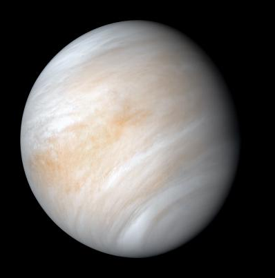

Venus is the second planet from the Sun and is similar in size and structure to Earth, earning it the nickname "Earth's twin." However, its thick, toxic atmosphere traps heat in a runaway greenhouse effect, making it the hottest planet in our solar system with surface temperatures hot enough to melt lead.
The planet's surface is obscured by dense clouds of sulfuric acid, but radar mapping has revealed mountains, valleys, and vast plains. Venus has a slow rotation, taking about 243 Earth days to complete one rotation, and it rotates in the opposite direction to most planets, causing the Sun to rise in the west and set in the east.
Despite its harsh conditions, Venus has been a target for exploration. Missions like NASA's Magellan have mapped its surface, and future missions aim to further study its atmosphere and geology.
| Feature | Details |
|---|---|
| Diameter | 12,104 km |
| Distance from Sun | 108.2 million km |
| Orbital Period | 225 Earth days |
| Rotation Period | 243 Earth days (retrograde) |
| Surface Temperature | ~465°C |
| Atmosphere | Carbon dioxide, nitrogen |
| Moons | None |
| Rings | None |
| Magnetic Field | Weak |
| First Spacecraft Visit | Mariner 2 (1962) |
| Most Recent Mission | Akatsuki (2015-present) |